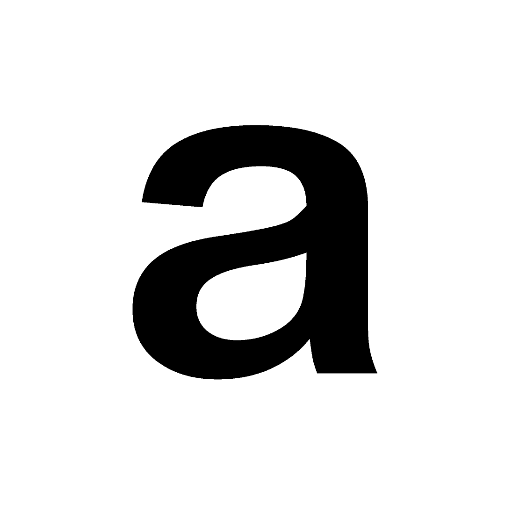

Context
Visual Language
ManifestoExperimental Jetset
A manifesto exploring the aesthetic of the machine in a contemporary context. Written by Alfred Hoi and Luke Hoban, inspired by Experimental Jetset’s manifesto ‘Disrepresentation Now!’
Acknowledging the constraints and limitations of the machine was a way for us to further embrace its aesthetic and became part of our exploration into the visual style for Fearful Harmony.
One limitation was choosing a singular typeface, as operating systems communicate with one default typeface specifically programmed for an aesthetic or functional need. We designed a typeface for this project which was a custom hybrid between Helvetica and Arial, an homage to the early system fonts from both Macintosh and Windows. It’s weights were designed so that the lighter it was, the more it resembled Helvetica, while the heavier it was, the more it resembled Arial. We also limited our colour palette, setting everything in grayscale as a means to speculate into the inherent and raw aesthetic of the machine. This raw aesthetic is reinforced through the publication, with the decision to use newsprint as the medium, thus keeping the content inherently noisy through the unpredictability of the printer when dealing with newsprint. Elements such as crop marks, bleed marks and colour bars are all visible throughout the publication, creating a feeling of authenticity that keeps true to the material quality of the machine. The poster, other moving elements and the website also took visual cues from the printed matter, expanding on the noise aesthetic through the affordances of the format, creating a dynamic and unpredictable outcome.
We started conceptualising ideas and aesthetics without the focus on technology being functional and user friendly. We believed that roles such as UX, though important, often dictated the look of a design outcome, taking away the heart of what design is, which, for us, was to engage through aesthetics. This was something we inferred from the manifesto of ‘Experimental Jetset’ (2010), on their ideas of what the representation of design should be (related text below).
“Other representative tendencies in graphic design include the fact that nowadays more and more designers refer to their profession in (immaterial) terms such as ‘visual communication’, ‘information architecture’, etc. These particular notions painfully show the shift in graphic design towards the denial and neglect of its own physical dimensions. We believe that abstraction, a movement away from realism but towards reality, is the ultimate form of engagement.”
Experimental Jetset
Manifesto: We believe at its core, design needs to be visually engaging in order to effectively communicate its message. Yet the designers increasing reliance on machines has shifted into a design focus on functionality, paving the way for a banal aesthetic.
We provoke for a realisation that we are increasingly becoming distant from our machines. To be aware of the aesthetic potential that lies beyond the screen. To boldly go against the original intent of our machines.
Static Haze speculates on how the machine perceives and, in turn, communicates itself once woken up by the user during its state of rest. Read more

Request download